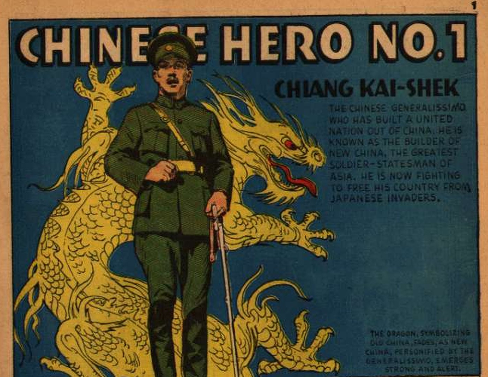

You're the fact-checker. For each part: read the comic on the left → get both checks right. Done = 8 green checks, then turn in at the bottom.
- Invader = an army that attacks and takes another country's land
- Manchuria = a big region in northern China
- League of Nations = the peace group of countries made after WWI
- Generalissimo = top general (Chiang Kai-shek's title)
- Concession = a part of a Chinese city run by a foreign country
- Appeasement = giving a bully what they want to avoid a fight
- Rearm = build up an army and weapons again
Content note: These pages show war and invasion. The 1943 Shanghai pages used a hateful slur for Japanese people, common in U.S. wartime comics. We covered it with a slur tag. Some drawings of Japanese soldiers are also unfair wartime stereotypes.

Click the page to make it bigger.
Turn in your work
Your work saves on this device, so you can come back later. Your teacher sees it after you turn it in.
Comics: "Chinese Hero No. 1: Chiang Kai-shek," True Comics #3 (Aug. 1941); "Shanghai Heroine: The Inspiring Story of Yang Hui Ming," True Comics #26 (Aug. 1943); "Britain's Top Man," Real Heroes #4 (May 1942). Parents' Magazine Press. Public-domain scans from Comic Book Plus (comicbookplus.com). Panels were cropped to today's reading.